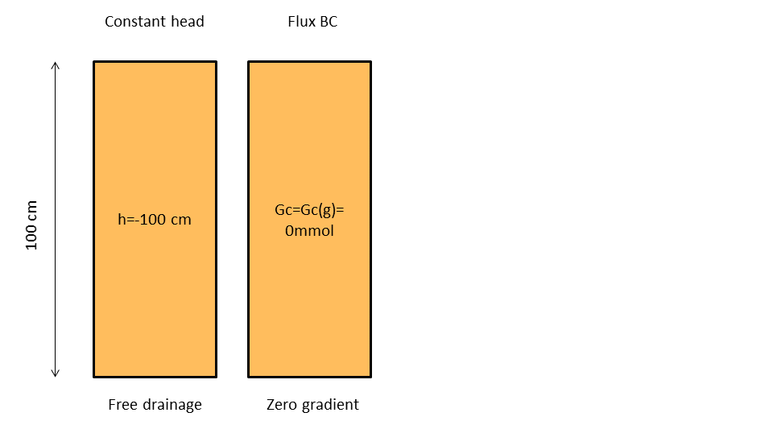
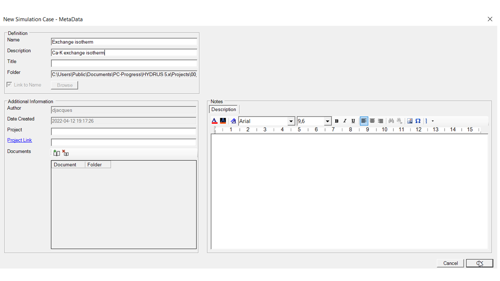
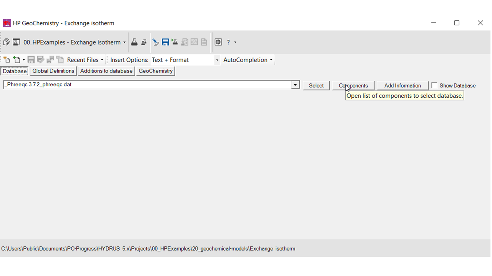
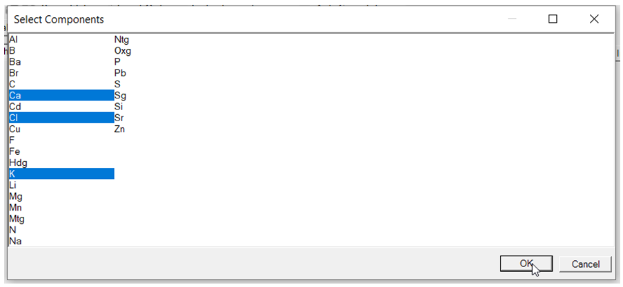
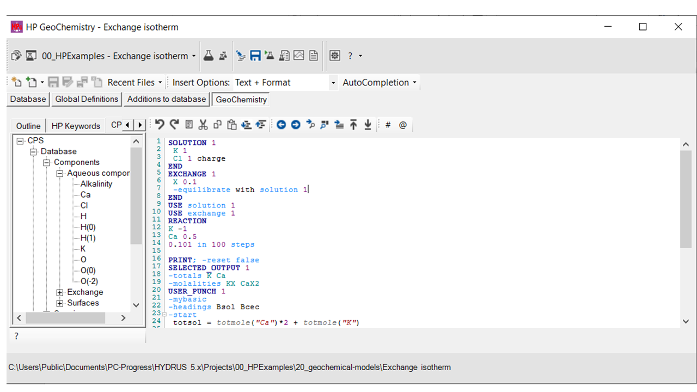
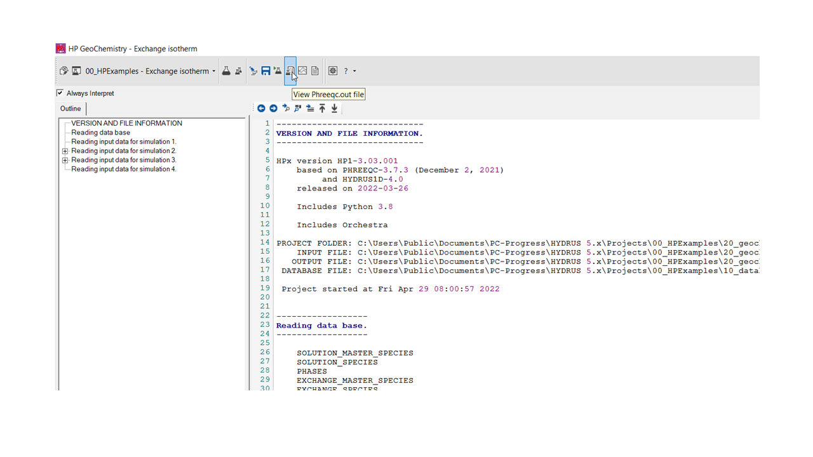
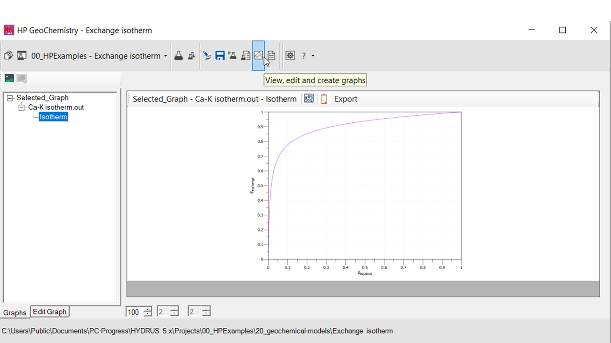
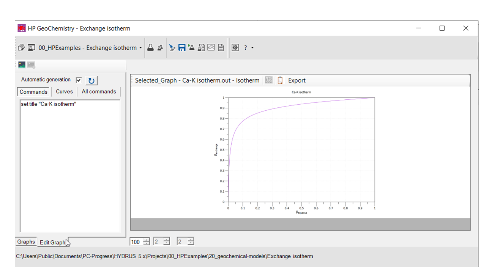
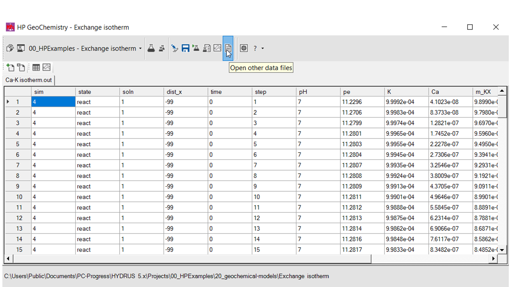

HPGeochemistry: Exchange isotherm
This example demonstrates how a new simulation is defined and how a particular problem is implemented, executed and visualized in HPGeochemistry.
The particular problem is to calculate a Ca-K cation isotherm of an exchanger with a capacity of 0.1 mol. The cation exchanger is initially completely in the K form (in a 1 mM KCl solution). The isotherm is calculated up to complete Ca coverage.
Define a new simulation in an existing project
In the main frame of HPGeochemistry, select the icon of the Project / Simulation Manager.
In the Project Manager, select the project (00_HPExamples) and click icon for creating a new simulation.

In the Metadata from of a simulation, fill in the name of the simulation (required) and a description (optional).

Click OK, and the simulation is defined. A folder is created containing the files of the simulation. In a Managed Project, the simulation is created in the folder 20_geochemical-models.
Select the simulation in the Project Manager, and push the select button.
Select components for the help tree
Go to the Database panel. The default database of the project is active.
Click Components to select the aqueous components that are relevant for the simulation. The selection is used to construct the help trees.

Select the relevant components

Implementation - Geochemical model
Go to the input text editors - Geochemistry.

Add the geochemical model:
|
# Define the aqueous solution - 1mM of a KCl solution SOLUTION 1 K 1 Cl 1 charge END # Define an exchanger with a capacity of 0.1 mol, and equilibrate it with the aqueous solution EXCHANGE 1 X 0.1 -equilibrate with solution 1 END # Calculate the isotherm: remove K and add Ca in a charged balanced way # All K is removed - initially on the exchanger and in the solution USE solution 1 USE exchange 1 REACTION K -1 Ca 0.5 0.101 in 100 steps # Limit output in phreeqc.out. PRINT; -reset false |
Implementation - Output
Add also the instruction for output and plotting:
|
# Define the standard geochemical variables to be printed in the selected output file # File name is Ca-K isotherm.out -file Ca-K isotherm.out -totals K Ca -molalities KX CaX2 # Definition of additional output variables to be printed in the selected output file defined with SELECTED_OUTPUT 1 -mybasic -headings Bsol Bcec -start totsol = totmole("Ca")*2 + totmole("K") totcec = (mol("CaX2")*2 + mol("KX")) punch(totmole("Ca")*2/totsol) punch(mol("CaX2")*2/totcec) -end # Make a plot based on the selected output file defined with SELECTED_OUTPUT 1 -fig_nr 1 -fig_name "Isotherm" -fig_x Bsol -fig_y Bcec -fig_xt "{/Symbol b}_{aqueous}" -fig_yt "{/Symbol b}_{exchange}" -fig_start #gnuplot commands -fig_end |
Selected_output 1 will create a file (Ca-K isotherm.out) with output variables of each step in the calculation of the isotherm (i.e. the 100 steps defined with REACTION).
USER_PUNCH 1 adds extra user-defined variables to the file Ca-K isotherm.out. The user-defined output variables are calculated with one of the script interpreters in HPGeochemistry (in the example above, MyBasic is used).
Selected_graph 1 uses the output variables in Ca-K isotherm.out. The user can define different graphs (with different numbers by -fig_nr) indicating the X and Y variables. The graphs defined in Selected_graph are visualized in the Graph Workspace.
Running
In the main frame of HPGeochemistry, select the icon for running a simulation.
HPGeochemistry saves the input, and starts HPx.exe. A dos window opens, and the progress of simulation is shown (together with warnings and errors).
The dos windows closes automatically.
Checking the simulation
In the PHREEQC Out Workspace, the phreeqc.out file is shown.

In the Graph Workspace, plots defined with Selected_graph are listed.

In the Edit Graph tab of a plot, a plot can be edited using commands for gnuplot.

In the Datafile Workspace, data files can be viewed, with the option to create plots from the data file.

Created with the Personal Edition of HelpNDoc: Transform Your Documentation Process with HelpNDoc's Project Analyzer